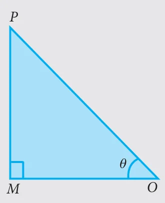
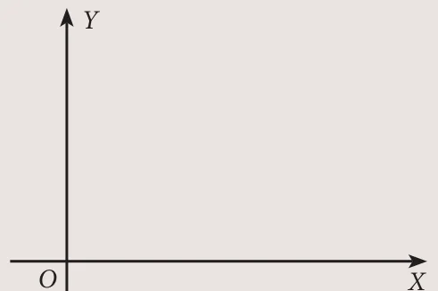
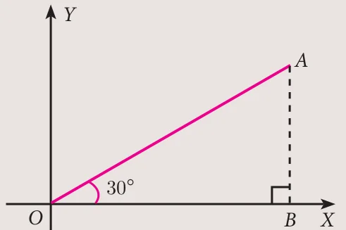

For all real values of \(\theta\), we have the following three identities.
(i) \(\sin^2\theta + \cos^2\theta = 1\) (ii) \(1 + \tan^2\theta = \sec^2\theta\) (iii) \(1 + \cot^2\theta = \operatorname{cosec}^2\theta\)
These identities are termed as three fundamental identities of trigonometry.
We will now prove them as follows.

Identity: \(\sin^2\theta + \cos^2\theta = 1\)
Proof In the right angled \(\Delta OMP\), we have
\(\dfrac{OM}{OP} = \cos\theta,\quad \dfrac{PM}{OP} = \sin\theta \quad \ldots(1)\)
By Pythagoras theorem
\(MP^2 + OM^2 = OP^2 \quad \ldots(2)\)
Dividing each term on both sides of (2) by \(OP^2\), \((\because OP \ne 0)\) we get,
\(\dfrac{MP^2}{OP^2} + \dfrac{OM^2}{OP^2} = \dfrac{OP^2}{OP^2}\)
\(\Rightarrow \left(\dfrac{MP}{OP}\right)^2 + \left(\dfrac{OM}{OP}\right)^2 = \left(\dfrac{OP}{OP}\right)^2\)
From (1), \((\sin\theta)^2 + (\cos\theta)^2 = 1^2\)
Hence \(\sin^2\theta + \cos^2\theta = 1\)
Identity: \(1 + \tan^2\theta = \sec^2\theta\)
Proof In the right angled \(\Delta OMP\), we have
\(\dfrac{MP}{OM} = \tan\theta,\quad \dfrac{OP}{OM} = \sec\theta \quad \ldots(3)\)
From (2), \(MP^2 + OM^2 = OP^2\)
Dividing each term on both sides of (2) by \(OM^2\), \((\because OM \ne 0)\) we get,
\(\dfrac{MP^2}{OM^2} + \dfrac{OM^2}{OM^2} = \dfrac{OP^2}{OM^2}\)
\(\Rightarrow \left(\dfrac{MP}{OM}\right)^2 + \left(\dfrac{OM}{OM}\right)^2 = \left(\dfrac{OP}{OM}\right)^2\)
From (3), \((\tan\theta)^2 + 1^2 = (\sec\theta)^2\)
Hence \(1 + \tan^2\theta = \sec^2\theta\).
Identity: \(1 + \cot^2\theta = \operatorname{cosec}^2\theta\)
Proof In the right angled \(\Delta OMP\), we have
\(\dfrac{OM}{MP} = \cot\theta,\quad \dfrac{OP}{MP} = \operatorname{cosec}\theta \quad \ldots(4)\)
From (2), \(MP^2 + OM^2 = OP^2\)
Dividing each term on both sides of (2) by \(MP^2\), \((\because MP \ne 0)\) we get,
\(\dfrac{MP^2}{MP^2} + \dfrac{OM^2}{MP^2} = \dfrac{OP^2}{MP^2}\)
\(\Rightarrow \left(\dfrac{MP}{MP}\right)^2 + \left(\dfrac{OM}{MP}\right)^2 = \left(\dfrac{OP}{MP}\right)^2\)
From (4), \(1^2 + (\cot\theta)^2 = (\operatorname{cosec}\theta)^2\)
Hence, \(1 + \cot^2\theta = \operatorname{cosec}^2\theta\)
These identities can also be rewritten as follows.
| Identity | Equal forms |
|---|---|
| \(\sin^2\theta + \cos^2\theta = 1\) | \(\sin^2\theta = 1 - \cos^2\theta\) (or) \(\cos^2\theta = 1 - \sin^2\theta\) |
| \(1 + \tan^2\theta = \sec^2\theta\) | \(\tan^2\theta = \sec^2\theta - 1\) (or) \(\sec^2\theta - \tan^2\theta = 1\) |
| \(1 + \cot^2\theta = \operatorname{cosec}^2\theta\) | \(\cot^2\theta = \operatorname{cosec}^2\theta - 1\) (or) \(\operatorname{cosec}^2\theta - \cot^2\theta = 1\) |
Note
Though the above identities are true for any angle \(\theta\), we will consider the six trigonometric ratios only for \(0^\circ < \theta < 90^\circ\)
Activity 1
Take a white sheet of paper. Construct two perpendicular lines \(OX\), \(OY\) which meet at \(O\), as shown in the Fig. 6.4(a).

Considering \(OX\) as \(X\) axis, \(OY\) as \(Y\) axis.
We will verify the values of \(\sin\theta\) and \(\cos\theta\) for certain angles \(\theta\).
Let \(\theta = 30^\circ\)
Construct a line segment \(OA\) of any length such that \(\angle AOX = 30^\circ\), as shown in the Fig. 6.4(b).
Draw a perpendicular from \(A\) to \(OX\), meeting at \(B\).
Now using scale, measure the lengths of \(AB\), \(OB\) and \(OA\).

Find the ratios \(\dfrac{AB}{OA}\), \(\dfrac{OB}{OA}\) and \(\dfrac{AB}{OB}\).
What do you get? Can you compare these values with the trigonometric table values? What is your conclusion? Carry out the same procedure for \(\theta = 45^\circ\) and \(\theta = 60^\circ\). What are your conclusions?
Example 6.1
Prove that \(\tan^2\theta - \sin^2\theta = \tan^2\theta\sin^2\theta\)
Solution
\(\tan^2\theta - \sin^2\theta = \tan^2\theta - \dfrac{\sin^2\theta}{\cos^2\theta}\cdot\cos^2\theta\)
\(= \tan^2\theta(1 - \cos^2\theta) = \tan^2\theta\sin^2\theta\)
Example 6.2
Prove that \(\dfrac{\sin A}{1 + \cos A} = \dfrac{1 - \cos A}{\sin A}\)
Solution
\(\dfrac{\sin A}{1 + \cos A} = \dfrac{\sin A}{1 + \cos A} \times \dfrac{1 - \cos A}{1 - \cos A}\) [multiply numerator and denominator by the conjugate of \(1 + \cos A\)]
\(= \dfrac{\sin A(1 - \cos A)}{(1 + \cos A)(1 - \cos A)} = \dfrac{\sin A(1 - \cos A)}{1 - \cos^2 A}\)
\(= \dfrac{\sin A(1 - \cos A)}{\sin^2 A} = \dfrac{1 - \cos A}{\sin A}\)
Example 6.3
Prove that \(1 + \dfrac{\cot^2\theta}{1 + \operatorname{cosec}\theta} = \operatorname{cosec}\theta\)
Solution
\(1 + \dfrac{\cot^2\theta}{1 + \operatorname{cosec}\theta} = 1 + \dfrac{\operatorname{cosec}^2\theta - 1}{\operatorname{cosec}\theta + 1}\) \(\left[\because \operatorname{cosec}^2\theta - 1 = \cot^2\theta\right]\)
\(= 1 + \dfrac{(\operatorname{cosec}\theta + 1)(\operatorname{cosec}\theta - 1)}{\operatorname{cosec}\theta + 1}\)
\(= 1 + (\operatorname{cosec}\theta - 1) = \operatorname{cosec}\theta\)
Example 6.4
Prove that \(\sec\theta - \cos\theta = \tan\theta\sin\theta\)
Solution
\(\sec\theta - \cos\theta = \dfrac{1}{\cos\theta} - \cos\theta = \dfrac{1 - \cos^2\theta}{\cos\theta}\)
\(= \dfrac{\sin^2\theta}{\cos\theta}\) \(\left[\because 1 - \cos^2\theta = \sin^2\theta\right]\)
\(= \dfrac{\sin\theta}{\cos\theta} \times \sin\theta = \tan\theta\sin\theta\)
Example 6.5
Prove that \(\sqrt{\dfrac{1 + \cos\theta}{1 - \cos\theta}} = \operatorname{cosec}\theta + \cot\theta\)
Solution
\(\sqrt{\dfrac{1 + \cos\theta}{1 - \cos\theta}} = \sqrt{\dfrac{1 + \cos\theta}{1 - \cos\theta} \times \dfrac{1 + \cos\theta}{1 + \cos\theta}}\) [multiply numerator and denominator by the conjugate of \(1 - \cos\theta\)]
\(= \sqrt{\dfrac{(1 + \cos\theta)^2}{1 - \cos^2\theta}} = \dfrac{1 + \cos\theta}{\sqrt{\sin^2\theta}}\) \(\left[\because \sin^2\theta + \cos^2\theta = 1\right]\)
\(= \dfrac{1 + \cos\theta}{\sin\theta} = \operatorname{cosec}\theta + \cot\theta\)
Example 6.6
Prove that \(\dfrac{\sec\theta}{\sin\theta} - \dfrac{\sin\theta}{\cos\theta} = \cot\theta\)
Solution
\(\dfrac{\sec\theta}{\sin\theta} - \dfrac{\sin\theta}{\cos\theta} = \dfrac{\;\frac{1}{\cos\theta}\;}{\sin\theta} - \dfrac{\sin\theta}{\cos\theta} = \dfrac{1}{\sin\theta\cos\theta} - \dfrac{\sin\theta}{\cos\theta}\)
\(= \dfrac{1 - \sin^2\theta}{\sin\theta\cos\theta} = \dfrac{\cos^2\theta}{\sin\theta\cos\theta} = \cot\theta\)
Example 6.7
Prove that \(\sin^2 A\cos^2 B + \cos^2 A\sin^2 B + \cos^2 A\cos^2 B + \sin^2 A\sin^2 B = 1\)
Solution
\(\sin^2 A\cos^2 B + \cos^2 A\sin^2 B + \cos^2 A\cos^2 B + \sin^2 A\sin^2 B\)
\(= \sin^2 A\cos^2 B + \sin^2 A\sin^2 B + \cos^2 A\sin^2 B + \cos^2 A\cos^2 B\)
\(= \sin^2 A(\cos^2 B + \sin^2 B) + \cos^2 A(\sin^2 B + \cos^2 B)\)
\(= \sin^2 A(1) + \cos^2 A(1)\) \((\because \sin^2 B + \cos^2 B = 1)\)
\(= \sin^2 A + \cos^2 A = 1\)
Example 6.8
If \(\cos\theta + \sin\theta = \sqrt{2}\cos\theta\), then prove that \(\cos\theta - \sin\theta = \sqrt{2}\sin\theta\)
Solution
Now, \(\cos\theta + \sin\theta = \sqrt{2}\cos\theta\).
Squaring both sides,
\((\cos\theta + \sin\theta)^2 = (\sqrt{2}\cos\theta)^2\)
\(\cos^2\theta + \sin^2\theta + 2\sin\theta\cos\theta = 2\cos^2\theta\)
\(2\cos^2\theta - \cos^2\theta - \sin^2\theta = 2\sin\theta\cos\theta\)
\(\cos^2\theta - \sin^2\theta = 2\sin\theta\cos\theta\)
\((\cos\theta + \sin\theta)(\cos\theta - \sin\theta) = 2\sin\theta\cos\theta\)
\(\cos\theta - \sin\theta = \dfrac{2\sin\theta\cos\theta}{\cos\theta + \sin\theta} = \dfrac{2\sin\theta\cos\theta}{\sqrt{2}\cos\theta}\) \(\left[\because \cos\theta + \sin\theta = \sqrt{2}\cos\theta\right]\)
\(= \sqrt{2}\sin\theta\)
Therefore, \(\cos\theta - \sin\theta = \sqrt{2}\sin\theta\).
Example 6.9
Prove that \((\operatorname{cosec}\theta - \sin\theta)(\sec\theta - \cos\theta)(\tan\theta + \cot\theta) = 1\)
Solution
\((\operatorname{cosec}\theta - \sin\theta)(\sec\theta - \cos\theta)(\tan\theta + \cot\theta)\)
\(= \left(\dfrac{1}{\sin\theta} - \sin\theta\right)\left(\dfrac{1}{\cos\theta} - \cos\theta\right)\left(\dfrac{\sin\theta}{\cos\theta} + \dfrac{\cos\theta}{\sin\theta}\right)\)
\(= \dfrac{1 - \sin^2\theta}{\sin\theta} \times \dfrac{1 - \cos^2\theta}{\cos\theta} \times \dfrac{\sin^2\theta + \cos^2\theta}{\sin\theta\cos\theta}\)
\(= \dfrac{\cos^2\theta\sin^2\theta \times 1}{\sin^2\theta\cos^2\theta} = 1\)
Example 6.10
Prove that \(\dfrac{\sin A}{1 + \cos A} + \dfrac{\sin A}{1 - \cos A} = 2\operatorname{cosec} A\).
Solution
\(\dfrac{\sin A}{1 + \cos A} + \dfrac{\sin A}{1 - \cos A} = \dfrac{\sin A(1 - \cos A) + \sin A(1 + \cos A)}{(1 + \cos A)(1 - \cos A)}\)
\(= \dfrac{\sin A - \sin A\cos A + \sin A + \sin A\cos A}{1 - \cos^2 A}\)
\(= \dfrac{2\sin A}{1 - \cos^2 A} = \dfrac{2\sin A}{\sin^2 A} = 2\operatorname{cosec} A\)
Example 6.11
If \(\operatorname{cosec}\theta + \cot\theta = P\), then prove that \(\cos\theta = \dfrac{P^2 - 1}{P^2 + 1}\)
Solution
Given \(\operatorname{cosec}\theta + \cot\theta = P \quad \ldots(1)\)
\(\operatorname{cosec}^2\theta - \cot^2\theta = 1\) (identity)
\(\operatorname{cosec}\theta - \cot\theta = \dfrac{1}{\operatorname{cosec}\theta + \cot\theta}\)
\(\operatorname{cosec}\theta - \cot\theta = \dfrac{1}{P} \quad \ldots(2)\)
Adding (1) and (2) we get,
\(2\operatorname{cosec}\theta = P + \dfrac{1}{P}\)
\(2\operatorname{cosec}\theta = \dfrac{P^2 + 1}{P} \quad \ldots(3)\)
Subtracting (2) from (1), we get,
\(2\cot\theta = P - \dfrac{1}{P}\)
\(2\cot\theta = \dfrac{P^2 - 1}{P} \quad \ldots(4)\)
Dividing (4) by (3) we get,
\(\dfrac{2\cot\theta}{2\operatorname{cosec}\theta} = \dfrac{P^2 - 1}{P} \times \dfrac{P}{P^2 + 1} \;\Rightarrow\; \cos\theta = \dfrac{P^2 - 1}{P^2 + 1}\)
Example 6.12
Prove that \(\tan^2 A - \tan^2 B = \dfrac{\sin^2 A - \sin^2 B}{\cos^2 A\cos^2 B}\)
Solution
\(\tan^2 A - \tan^2 B = \dfrac{\sin^2 A}{\cos^2 A} - \dfrac{\sin^2 B}{\cos^2 B}\)
\(= \dfrac{\sin^2 A\cos^2 B - \sin^2 B\cos^2 A}{\cos^2 A\cos^2 B}\)
\(= \dfrac{\sin^2 A(1 - \sin^2 B) - \sin^2 B(1 - \sin^2 A)}{\cos^2 A\cos^2 B}\)
\(= \dfrac{\sin^2 A - \sin^2 A\sin^2 B - \sin^2 B + \sin^2 A\sin^2 B}{\cos^2 A\cos^2 B} = \dfrac{\sin^2 A - \sin^2 B}{\cos^2 A\cos^2 B}\)
Example 6.13
Prove that \(\left(\dfrac{\cos^3 A - \sin^3 A}{\cos A - \sin A}\right) - \left(\dfrac{\cos^3 A + \sin^3 A}{\cos A + \sin A}\right) = 2\sin A\cos A\)
Solution
\(\left(\dfrac{\cos^3 A - \sin^3 A}{\cos A - \sin A}\right) - \left(\dfrac{\cos^3 A + \sin^3 A}{\cos A + \sin A}\right)\)
\(= \left(\dfrac{(\cos A - \sin A)(\cos^2 A + \sin^2 A + \cos A\sin A)}{\cos A - \sin A}\right)\) \(\left[\begin{array}{l}\because a^3 - b^3 = (a - b)(a^2 + b^2 + ab)\\ \phantom{\because}\ a^3 + b^3 = (a + b)(a^2 + b^2 - ab)\end{array}\right]\)
\(\quad - \left(\dfrac{(\cos A + \sin A)(\cos^2 A + \sin^2 A - \cos A\sin A)}{\cos A + \sin A}\right)\)
\(= (1 + \cos A\sin A) - (1 - \cos A\sin A)\)
\(= 2\cos A\sin A\)
Example 6.14
Prove that \(\dfrac{\sin A}{\sec A + \tan A - 1} + \dfrac{\cos A}{\operatorname{cosec} A + \cot A - 1} = 1\)
Solution
\(\dfrac{\sin A}{\sec A + \tan A - 1} + \dfrac{\cos A}{\operatorname{cosec} A + \cot A - 1}\)
\(= \dfrac{\sin A(\operatorname{cosec} A + \cot A - 1) + \cos A(\sec A + \tan A - 1)}{(\sec A + \tan A - 1)(\operatorname{cosec} A + \cot A - 1)}\)
\(= \dfrac{\sin A\operatorname{cosec} A + \sin A\cot A - \sin A + \cos A\sec A + \cos A\tan A - \cos A}{(\sec A + \tan A - 1)(\operatorname{cosec} A + \cot A - 1)}\)
\(= \dfrac{1 + \cos A - \sin A + 1 + \sin A - \cos A}{\left(\dfrac{1}{\cos A} + \dfrac{\sin A}{\cos A} - 1\right)\left(\dfrac{1}{\sin A} + \dfrac{\cos A}{\sin A} - 1\right)}\)
\(= \dfrac{2}{\left(\dfrac{1 + \sin A - \cos A}{\cos A}\right)\left(\dfrac{1 + \cos A - \sin A}{\sin A}\right)}\)
\(= \dfrac{2\sin A\cos A}{(1 + \sin A - \cos A)(1 + \cos A - \sin A)}\)
\(= \dfrac{2\sin A\cos A}{[1 + (\sin A - \cos A)][1 - (\sin A - \cos A)]} = \dfrac{2\sin A\cos A}{1 - (\sin A - \cos A)^2}\)
\(= \dfrac{2\sin A\cos A}{1 - (\sin^2 A + \cos^2 A - 2\sin A\cos A)} = \dfrac{2\sin A\cos A}{1 - (1 - 2\sin A\cos A)}\)
\(= \dfrac{2\sin A\cos A}{1 - 1 + 2\sin A\cos A} = \dfrac{2\sin A\cos A}{2\sin A\cos A} = 1.\)
Example 6.15
Show that \(\left(\dfrac{1 + \tan^2 A}{1 + \cot^2 A}\right) = \left(\dfrac{1 - \tan A}{1 - \cot A}\right)^2\)
Solution
LHS
\(\left(\dfrac{1 + \tan^2 A}{1 + \cot^2 A}\right) = \dfrac{1 + \tan^2 A}{1 + \dfrac{1}{\tan^2 A}}\)
\(= \dfrac{1 + \tan^2 A}{\;\dfrac{\tan^2 A + 1}{\tan^2 A}\;} = \tan^2 A \quad \ldots(1)\)
RHS
\(\left(\dfrac{1 - \tan A}{1 - \cot A}\right)^2 = \left(\dfrac{1 - \tan A}{1 - \dfrac{1}{\tan A}}\right)^2\)
\(= \left(\dfrac{1 - \tan A}{\;\dfrac{\tan A - 1}{\tan A}\;}\right)^2 = (-\tan A)^2 = \tan^2 A \quad \ldots(2)\)
From (1) and (2), \(\left(\dfrac{1 + \tan^2 A}{1 + \cot^2 A}\right) = \left(\dfrac{1 - \tan A}{1 - \cot A}\right)^2\)
Example 6.16
Prove that \(\dfrac{(1 + \cot A + \tan A)(\sin A - \cos A)}{\sec^3 A - \operatorname{cosec}^3 A} = \sin^2 A\cos^2 A\)
Solution
\(\dfrac{(1 + \cot A + \tan A)(\sin A - \cos A)}{\sec^3 A - \operatorname{cosec}^3 A}\)
\(= \dfrac{\left(1 + \dfrac{\cos A}{\sin A} + \dfrac{\sin A}{\cos A}\right)(\sin A - \cos A)}{(\sec A - \operatorname{cosec} A)(\sec^2 A + \sec A\operatorname{cosec} A + \operatorname{cosec}^2 A)}\)
\(= \dfrac{\dfrac{(\sin A\cos A + \cos^2 A + \sin^2 A)(\sin A - \cos A)}{\sin A\cos A}}{(\sec A - \operatorname{cosec} A)\left(\dfrac{1}{\cos^2 A} + \dfrac{1}{\cos A\sin A} + \dfrac{1}{\sin^2 A}\right)}\)
\(= \dfrac{(\sin A\cos A + 1)\left(\dfrac{\sin A}{\sin A\cos A} - \dfrac{\cos A}{\sin A\cos A}\right)}{(\sec A - \operatorname{cosec} A)\left(\dfrac{\sin^2 A + \sin A\cos A + \cos^2 A}{\sin^2 A\cos^2 A}\right)}\)
\(= \dfrac{(\sin A\cos A + 1)(\sec A - \operatorname{cosec} A)}{(\sec A - \operatorname{cosec} A)(1 + \sin A\cos A)} \times \sin^2 A\cos^2 A = \sin^2 A\cos^2 A\)
Example 6.17
If \(\dfrac{\cos^2\theta}{\sin\theta} = p\) and \(\dfrac{\sin^2\theta}{\cos\theta} = q\), then prove that \(p^2q^2(p^2 + q^2 + 3) = 1\)
Solution
We have \(\dfrac{\cos^2\theta}{\sin\theta} = p \quad \ldots(1)\) and \(\dfrac{\sin^2\theta}{\cos\theta} = q \quad \ldots(2)\)
\(p^2q^2(p^2 + q^2 + 3) = \left(\dfrac{\cos^2\theta}{\sin\theta}\right)^2\left(\dfrac{\sin^2\theta}{\cos\theta}\right)^2 \times \left[\left(\dfrac{\cos^2\theta}{\sin\theta}\right)^2 + \left(\dfrac{\sin^2\theta}{\cos\theta}\right)^2 + 3\right]\) [from (1) and (2)]
\(= \left(\dfrac{\cos^4\theta}{\sin^2\theta}\right)\left(\dfrac{\sin^4\theta}{\cos^2\theta}\right) \times \left[\dfrac{\cos^4\theta}{\sin^2\theta} + \dfrac{\sin^4\theta}{\cos^2\theta} + 3\right]\)
\(= (\cos^2\theta \times \sin^2\theta) \times \left[\dfrac{\cos^6\theta + \sin^6\theta + 3\sin^2\theta\cos^2\theta}{\sin^2\theta\cos^2\theta}\right]\)
\(= \cos^6\theta + \sin^6\theta + 3\sin^2\theta\cos^2\theta\)
\(= (\cos^2\theta)^3 + (\sin^2\theta)^3 + 3\sin^2\theta\cos^2\theta\)
\(= [(\cos^2\theta + \sin^2\theta)^3 - 3\cos^2\theta\sin^2\theta(\cos^2\theta + \sin^2\theta)] + 3\sin^2\theta\cos^2\theta\)
\(= 1 - 3\cos^2\theta\sin^2\theta(1) + 3\cos^2\theta\sin^2\theta = 1\)
Progress Check
- The number of trigonometric ratios is \(\underline{\qquad}\).
- \(1 - \cos^2\theta\) is \(\underline{\qquad}\).
- \((\sec\theta + \tan\theta)(\sec\theta - \tan\theta)\) is \(\underline{\qquad}\).
- \((\cot\theta + \operatorname{cosec}\theta)(\cot\theta - \operatorname{cosec}\theta)\) is \(\underline{\qquad}\).
- \(\cos 60^\circ\sin 30^\circ + \cos 30^\circ\sin 60^\circ\) is \(\underline{\qquad}\).
- \(\tan 60^\circ\cos 60^\circ + \cot 60^\circ\sin 60^\circ\) is \(\underline{\qquad}\).
- \((\tan 45^\circ + \cot 45^\circ) + (\sec 45^\circ\operatorname{cosec} 45^\circ)\) is \(\underline{\qquad}\).
- (i) \(\sec\theta = \operatorname{cosec}\theta\) if \(\theta\) is \(\underline{\qquad}\). (ii) \(\cot\theta = \tan\theta\) if \(\theta\) is \(\underline{\qquad}\).